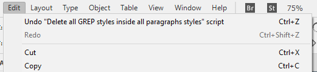

Delete all GREP styles inside all paragraphs styles
Script for InDesign. Written and tested in CC 2018.
As the name suggests, it deletes all GREP styles inside all paragraphs styles in the current document.
You can Undo/Redo the whole script.

Click here to download the script.
Note: I mostly write scripts for others but don't use them myself so often have no idea about the glitches they have. Someone just asked me to write this script and I wrote it quickly without careful testing. About five years later, I got the following feedback from a user:
I found your InDesign script for deleting all GREP styles in all paragraph styles. Thank you for sharing!
However, I do not know if you are aware that it does not seem to reset what is seemingly a property of paragraphs styles related to nested GREP styles that in IDML (I have not been able to find an equivalent in InDesign’s ExtendScript API, but I may have overlooked it) is encoded with the attribute EmptyGrepStyles of the element ParagraphStyle, which accepts a boolean value. For a particular style, it may have been set to “true”, if one edited it to remove nested GREP style inherited from another style this one was “Based on”.
The detail is tiny but crucial, IMHO, if one would want to use your script to restart with a blank slate, with the purpose of then redefining nested GREP styles all over again and rely on “based on” inheritance. Styles with that property set to “true” will not inherit nested GREP styles from the style they are based on even after running your script.
One can nevertheless reset that property too after having ran your script by setting the “based on” property to “[No paragraph style]” and then setting it back to what was before.
Taking that into account, I manage to set that property to false in bulk by running this other script.
At the moment, I have no time to look into the issue so leave his comments and script as they are.